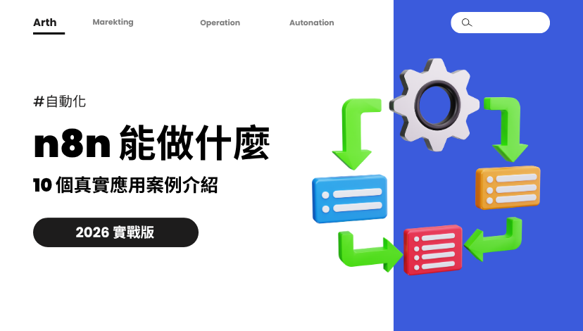

Web Article｜n8n 10 個真實應用案例：從 LINE AI 客服到會議助理的自動化工作流範本

為什麼保存
這篇值得放進 AI 學習雷達，因為它把 n8n 從「自動化工具」翻成「可部署的營運流程模板」。文章核心不是單一功能教學，而是把常見工作拆成 Trigger、條件判斷、Action 與資料歸檔，讓非工程背景的使用者也能判斷：哪個流程最值得先自動化、需要多少節點、多久能上線。
對欒帥目前的 Hermes / LINE / 知識庫工作流來說，最有參考價值的是：n8n 可作為「外部 SaaS 與 API 串接層」，Hermes 則負責更高階的理解、整理、決策與跨平台回覆。兩者可以形成「n8n 跑穩定流程，Hermes 處理高語意任務」的分工。
原文重點
原文把 n8n 的基本邏輯整理為：Trigger（何時觸發）→ Logic（條件與資料處理）→ Action（要做什麼）。常見 Trigger 包含排程、Webhook、表單與 API 輪詢；常見 Action 包含 Email、LINE、Notion、Google Sheets 與 Slack。
文章展開 7 個完整工作流範本，並補上 3 個速查場景：
- LINE AI 客服機器人：LINE 官方帳號收到訊息 → n8n Webhook → Claude 生成回覆 → LINE API 回傳。
- 社群內容自動發布：RSS 抓文章 → Claude 改寫 → 配圖 → 發到 Facebook / Instagram / Threads → Notion 紀錄。
- 每日新聞 AI 懶人包：多個 RSS / API 來源 → 清洗 → Claude 分類摘要 → Email / LINE / Slack 推送 → Notion 歸檔。
- 表單資料自動歸檔：Google Form → 資料驗證 → Notion 主資料庫 → Google Sheets 備份 → Email / Slack 通知。
- 電商訂單處理自動化：Shopify / 91App 新訂單 → 庫存檢查 → 採購或出貨 → CRM 更新 → 出貨通知。
- SEO 內容自動化流水線：SERP / 競品文章 → 內容結構分析 → Claude 產生大綱 → Notion 內容日曆 → Slack 指派。
- 會議助理：Zoom 錄音 → Whisper 轉文字 → Claude 摘要與行動項目 → Notion 會議紀錄 → Slack 通知。
- 郵件自動分類歸檔。
- 庫存預警系統。
- CRM 資料同步。
10 場景速查：適合怎麼選
原文建議新手從「表單資料歸檔」開始，因為難度低、節點數少、成果立即可見。接著可以進階到 LINE 推送 / LINE AI 客服，再往社群發布、SEO 內容流水線與電商訂單自動化推進。
實務上可依三個維度排序：
- 頻率高：每天或每週重複發生的流程優先，例如新聞懶人包、表單歸檔、會議記錄。
- 錯誤成本高：人工複製容易出錯的流程優先，例如訂單、庫存、CRM 同步。
- 語意處理需求高：需要摘要、改寫、分類、客服回覆的流程，可接 Claude / GPT / Gemini。
對 Hermes 工作流的啟發
這篇文章特別適合轉成「AI 自動化課程」或「中小企業工作流診斷」素材：
- LINE AI 客服：可對照 Hermes 的 LINE bot 能力，區分固定 webhook 流程與 agentic 回覆流程。
- 每日新聞懶人包：可對照 AI 學習雷達的歸檔、摘要、部署與驗證 pipeline。
- 表單歸檔：可對照課程報名名單處理規則，保留原始檔、不公開個資、另產私密整理檔。
- 會議助理：可延伸到 Teams / Zoom / Google Meet 摘要流程。
- SEO 內容流水線：可做成「內容營運 + AI 寫作 + 人工審稿」的實務案例。
官方查核與限制
n8n 官方文件確認其定位為 workflow automation 平台，支援以節點串接服務、資料轉換、分支邏輯與 hosting / self-hosting 部署。原文提到的 400+ 節點、自架與雲端部署方向，與 n8n 官方文件的產品定位一致。
但以下內容應視為作者實務建議，而非固定規格：
- Zeabur 部署成本、速度與可用方案會隨服務調整。
- 各工作流的節點數、建置時間與 ROI 會依帳號權限、API 限制、資料品質與錯誤處理需求改變。
- LINE、Facebook、Instagram、Threads、Shopify、91App 等平台 API 權限與審核規則會變動，正式上線前仍需逐一測試。
可行的下一步
如果要把這篇轉成實作，可先做三個最適合欒帥目前場景的 n8n workflow：
- LINE 收到特定連結 → n8n 記錄來源 → Hermes 歸檔到 AI 學習雷達 → 回覆完成通知。
- Google Form 報名名單 → 私密 Google Sheets / 本機 Markdown → 去個資公開摘要。
- 每日固定 RSS / 部落格監控 → Claude/Hermes 摘要 → LINE 或 Telegram 推送。
原始資料
- 原文：https://arthlai.com/en/blog/n8n-10-cases
- Canonical：https://arthlai.com/blog/n8n-10-cases
- n8n Docs：https://docs.n8n.io/
- n8n Hosting Docs：https://docs.n8n.io/hosting/